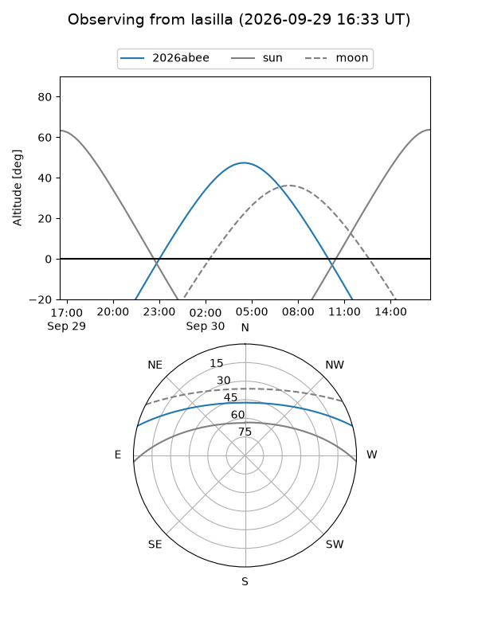
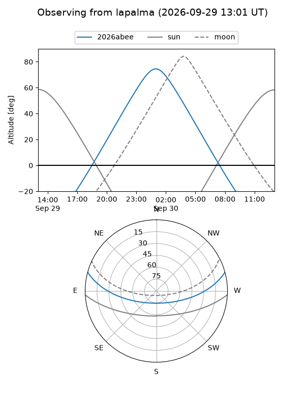
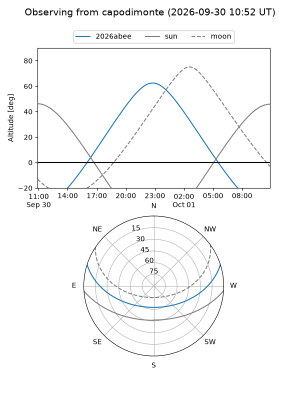
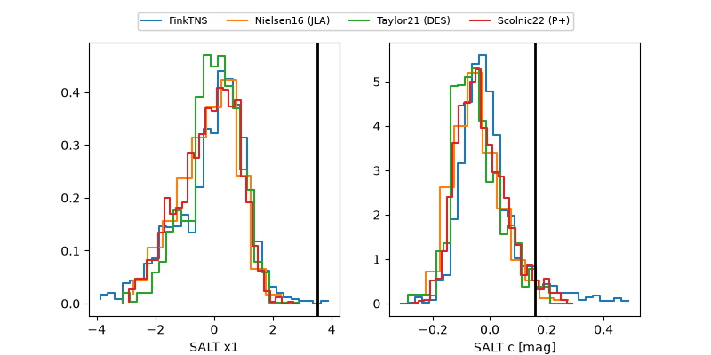

2026abee
Target 2026abee at 2026-09-30 13:13
Aliases and brokers:
FINK-ZTF: ztf.fink-portal.org/ZTF26abslqxc
Lasair-ZTF: lasair-ztf.lsst.ac.uk/objects/ZTF26abslqxc
ALeRCE-ZTF: alerce.online/object/ZTF26abslqxc
YSE-PZ: ziggy.ucolick.org/yse/transient_detail/2026abee
TNS name: wis-tns.org/object/2026abee
Direct TNS query: direct search
alt names
ZTF26abslqxc (ztf,fink_ztf)
2026abee (tns,yse)
Coordinates:
equatorial (ra, dec) = 5.1343,+13.20763
equatorial (HMS+DMS) = 00:20:32.24,+13:12:27.49
galactic (l, b) = (111.4322,-48.97292)
Flags:
TNS type: nan
peak dt: +14.5
Photometry:
last atlasc=19.52, ztfg=19.73, ztfr=19.37
1 atlasc, 11 ztfg, 10 ztfr detections
Lightcurve
Visibility



Additional plots
